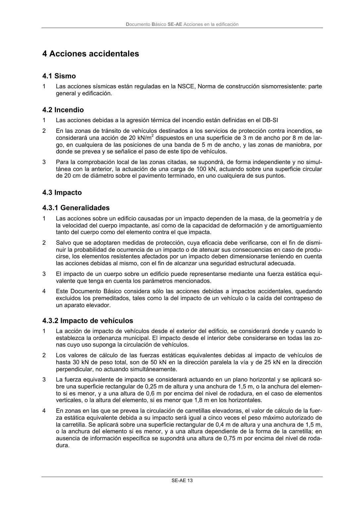

DB-SE-AE · 4 Acciones accidentales · 4.1 Sismo · 4.2 Incendio · 4.3 Impacto · 4.3.1 Generalidades · 4.3.2 Impacto de vehículos · versión 2009-04
SHA256: 26116e5088955f0c6963a6187270cad282e1e7bf5a53a90f695c8fa50b4e4487 · página física 17 de 46 · métodos de encabezado
solo si están cotejados.
Formatos: Markdown · JSON de bloques · PDF p. 17 · imagen PNG
Documento Básico SE-AE Acciones en la edificación SE-AE 13 4 Acciones accidentales 4.1 Sismo 1 Las acciones sísmicas están reguladas en la NSCE, Norma de construcción sismorresistente: parte general y edificación. 4.2 Incendio 1 Las acciones debidas a la agresión térmica del incendio están definidas en el DB-SI 2 En las zonas de tránsito de vehículos destinados a los servicios de protección contra incendios, se considerará una acción de 20 kN/m2 dispuestos en una superficie de 3 m de ancho por 8 m de lar- go, en cualquiera de las posiciones de una banda de 5 m de ancho, y las zonas de maniobra, por donde se prevea y se señalice el paso de este tipo de vehículos. 3 Para la comprobación local de las zonas citadas, se supondrá, de forma independiente y no simul- tánea con la anterior, la actuación de una carga de 100 kN, actuando sobre una superficie circular de 20 cm de diámetro sobre el pavimento terminado, en uno cualquiera de sus puntos. 4.3 Impacto 4.3.1 Generalidades 1 Las acciones sobre un edificio causadas por un impacto dependen de la masa, de la geometría y de la velocidad del cuerpo impactante, así como de la capacidad de deformación y de amortiguamiento tanto del cuerpo como del elemento contra el que impacta. 2 Salvo que se adoptaren medidas de protección, cuya eficacia debe verificarse, con el fin de dismi- nuir la probabilidad de ocurrencia de un impacto o de atenuar sus consecuencias en caso de produ- cirse, los elementos resistentes afectados por un impacto deben dimensionarse teniendo en cuenta las acciones debidas al mismo, con el fin de alcanzar una seguridad estructural adecuada. 3 El impacto de un cuerpo sobre un edificio puede representarse mediante una fuerza estática equi- valente que tenga en cuenta los parámetros mencionados. 4 Este Documento Básico considera sólo las acciones debidas a impactos accidentales, quedando excluidos los premeditados, tales como la del impacto de un vehículo o la caída del contrapeso de un aparato elevador. 4.3.2 Impacto de vehículos 1 La acción de impacto de vehículos desde el exterior del edificio, se considerará donde y cuando lo establezca la ordenanza municipal. El impacto desde el interior debe considerarse en todas las zo- nas cuyo uso suponga la circulación de vehículos. 2 Los valores de cálculo de las fuerzas estáticas equivalentes debidas al impacto de vehículos de hasta 30 kN de peso total, son de 50 kN en la dirección paralela la vía y de 25 kN en la dirección perpendicular, no actuando simultáneamente. 3 La fuerza equivalente de impacto se considerará actuando en un plano horizontal y se aplicará so- bre una superficie rectangular de 0,25 m de altura y una anchura de 1,5 m, o la anchura del elemen- to si es menor, y a una altura de 0,6 m por encima del nivel de rodadura, en el caso de elementos verticales, o la altura del elemento, si es menor que 1,8 m en los horizontales. 4 En zonas en las que se prevea la circulación de carretillas elevadoras, el valor de cálculo de la fuer- za estática equivalente debida a su impacto será igual a cinco veces el peso máximo autorizado de la carretilla. Se aplicará sobre una superficie rectangular de 0,4 m de altura y una anchura de 1,5 m, o la anchura del elemento si es menor, y a una altura dependiente de la forma de la carretilla; en ausencia de información específica se supondrá una altura de 0,75 m por encima del nivel de roda- dura.
